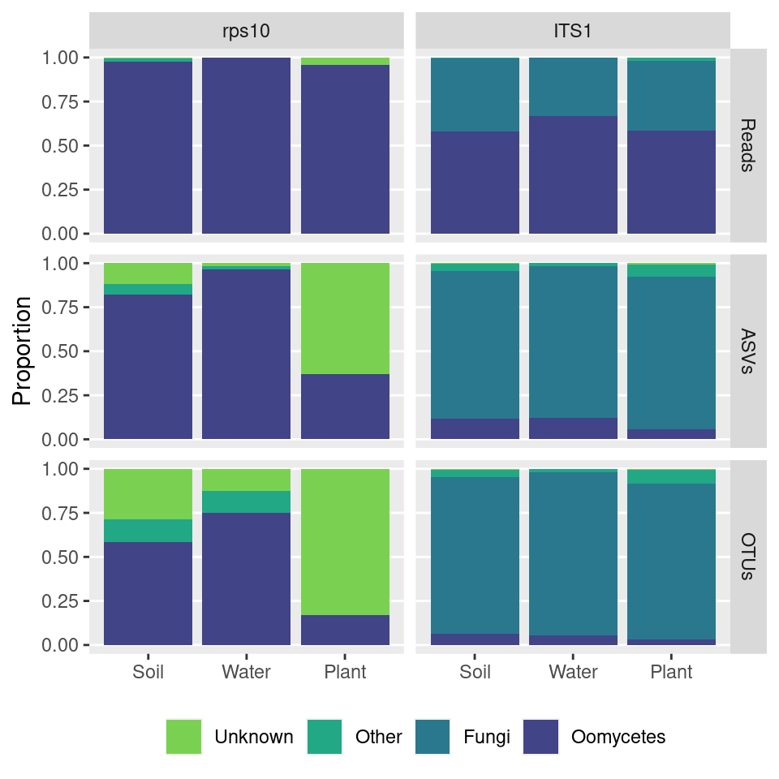
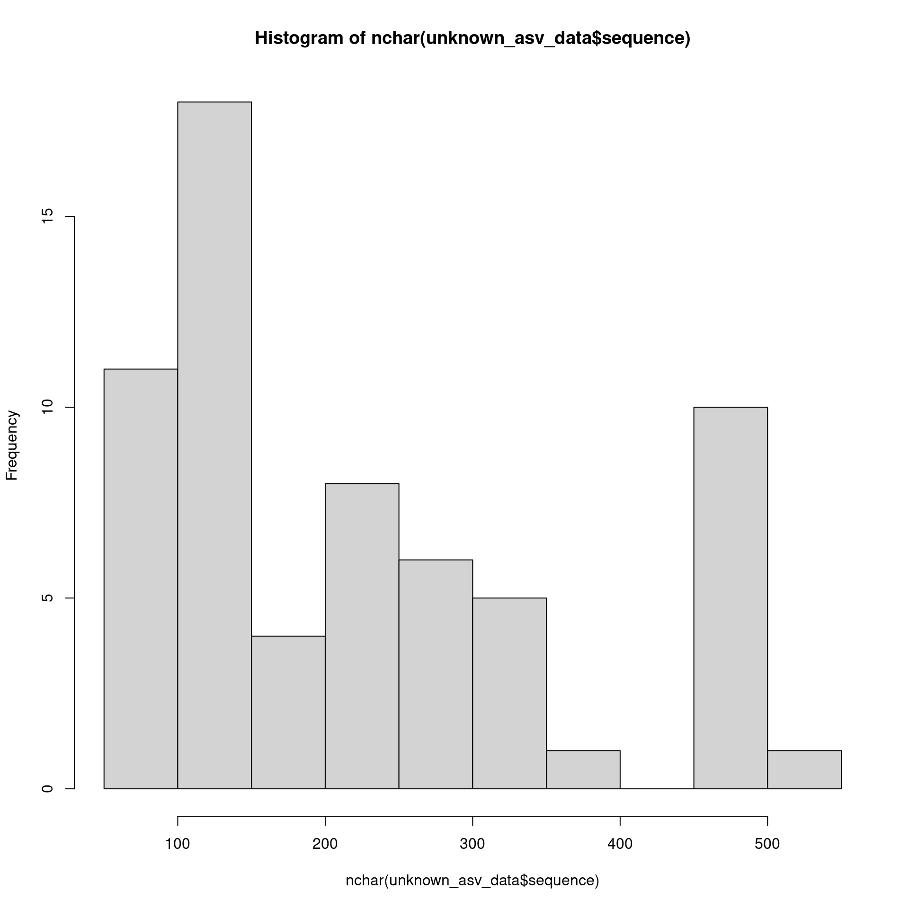
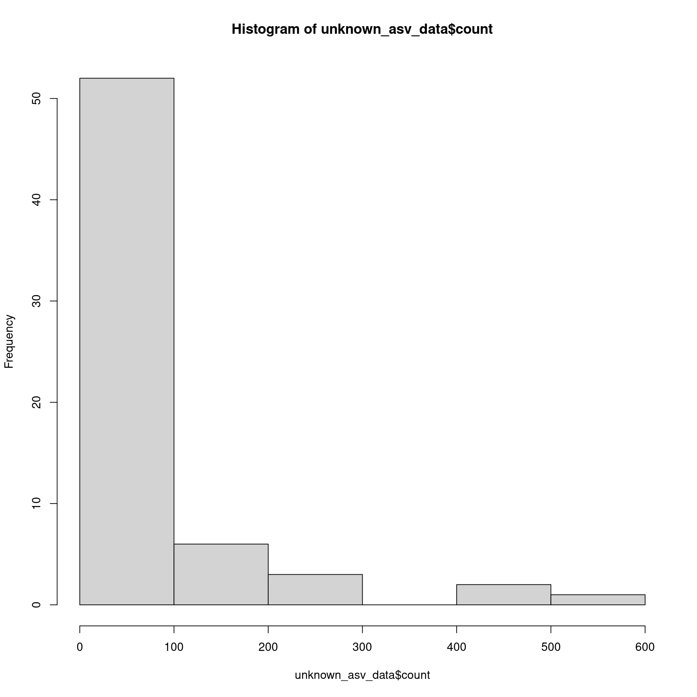
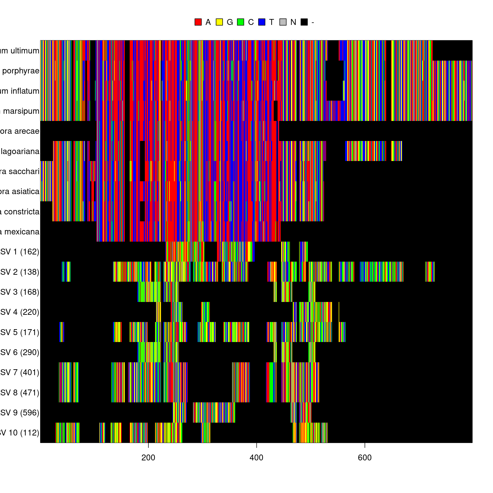

library(dplyr)
library(purrr)
library(furrr)
library(tidyr)
library(readr)
library(ggplot2)
library(sessioninfo)
library(metacoder)
library(vegan)
library(viridis)
library(DT)
library(stringr)
library(qsubmitter)
library(taxize)
library(forcats)
library(ips)
library(insect)
library(ape)
library(phangorn)minimum_read_count <- 10
seed <- 1
set.seed(seed)Since the reference databases will not have all the non-targets, it will be hard to detect non-target amplification. I will use blast against Genbank nt. Genbank is not curated, but it should be good enough to reliably assign a phylum.
abundance_asv <- read_csv(file.path('intermediate_data', 'abundance_asv.csv'))##
## ── Column specification ────────────────────────────────────────────────────────
## cols(
## .default = col_double(),
## sequence = col_character(),
## blast_tax = col_character(),
## taxonomy = col_character()
## )
## ℹ Use `spec()` for the full column specifications.abundance_asv## # A tibble: 9,528 x 52
## sequence blast_pid blast_cov blast_tax taxonomy A1 A2 B1 B2 C1
## <chr> <dbl> <dbl> <chr> <chr> <dbl> <dbl> <dbl> <dbl> <dbl>
## 1 AGTCCGT… 81.5 99.3 cellular… Eukaryo… 0 0 0 0 0
## 2 TTTCCGT… 89.0 99.6 cellular… Eukaryo… 0 0 0 0 0
## 3 GAAAATC… 82.0 99.3 cellular… Eukaryo… 0 0 18 10732 17
## 4 TTTCCGT… 90.9 99.6 cellular… Eukaryo… 0 0 0 0 0
## 5 TTTCCGT… 99.7 99.0 cellular… Eukaryo… 0 0 0 0 0
## 6 TTTCCGT… 100 99.6 cellular… Eukaryo… 0 0 0 0 0
## 7 AGTCCGT… 81.7 99.3 cellular… Eukaryo… 0 0 0 0 0
## 8 TTTCCGT… 100 99.6 cellular… Eukaryo… 0 0 0 0 0
## 9 AGTCCAC… 86.8 93.9 cellular… Eukaryo… 0 0 0 0 0
## 10 GAAAATC… 85.5 99.8 cellular… Eukaryo… 0 0 0 0 0
## # … with 9,518 more rows, and 42 more variables: C2 <dbl>, D1 <dbl>, D2 <dbl>,
## # E1 <dbl>, E2 <dbl>, F1 <dbl>, F2 <dbl>, G1 <dbl>, G2 <dbl>, H1 <dbl>,
## # A3 <dbl>, A4 <dbl>, B3 <dbl>, B4 <dbl>, C3 <dbl>, C4 <dbl>, D3 <dbl>,
## # D4 <dbl>, E3 <dbl>, E4 <dbl>, F3 <dbl>, F4 <dbl>, G3 <dbl>, G4 <dbl>,
## # H3 <dbl>, H4 <dbl>, A5 <dbl>, A6 <dbl>, B5 <dbl>, B6 <dbl>, C5 <dbl>,
## # C6 <dbl>, D5 <dbl>, D6 <dbl>, E5 <dbl>, E6 <dbl>, F5 <dbl>, F6 <dbl>,
## # G5 <dbl>, G6 <dbl>, H5 <dbl>, H6 <dbl>abundance_otu <- read_csv(file.path('intermediate_data', 'abundance_otu.csv'))##
## ── Column specification ────────────────────────────────────────────────────────
## cols(
## .default = col_double(),
## sequence = col_character(),
## blast_tax = col_character(),
## taxonomy = col_character()
## )
## ℹ Use `spec()` for the full column specifications.abundance_otu## # A tibble: 7,250 x 52
## sequence blast_pid blast_cov blast_tax taxonomy A1 A2 B1 B2 C1
## <chr> <dbl> <dbl> <chr> <chr> <dbl> <dbl> <dbl> <dbl> <dbl>
## 1 AGTCCGT… 81.5 99.3 cellular… Eukaryo… 0 0 0 0 0
## 2 TTTCCGT… 89.0 99.6 cellular… Eukaryo… 0 0 0 0 0
## 3 TTTCCGT… 90.9 99.6 cellular… Eukaryo… 0 0 0 0 0
## 4 TTTCCGT… 99.7 99.0 cellular… Eukaryo… 0 0 0 0 0
## 5 TTTCCGT… 100 99.6 cellular… Eukaryo… 0 0 0 0 0
## 6 TTTCCGT… 100 99.6 cellular… Eukaryo… 0 0 0 0 0
## 7 AGTCCAC… 86.8 93.9 cellular… Eukaryo… 0 0 0 0 0
## 8 TTTCCGT… 99.2 99.6 cellular… Eukaryo… 0 0 0 0 0
## 9 AGTCCAC… 93.7 99.3 cellular… Eukaryo… 0 0 0 0 0
## 10 TTTCCGT… 100 98.7 cellular… Eukaryo… 0 0 0 0 0
## # … with 7,240 more rows, and 42 more variables: C2 <dbl>, D1 <dbl>, D2 <dbl>,
## # E1 <dbl>, E2 <dbl>, F1 <dbl>, F2 <dbl>, G1 <dbl>, G2 <dbl>, H1 <dbl>,
## # A3 <dbl>, A4 <dbl>, B3 <dbl>, B4 <dbl>, C3 <dbl>, C4 <dbl>, D3 <dbl>,
## # D4 <dbl>, E3 <dbl>, E4 <dbl>, F3 <dbl>, F4 <dbl>, G3 <dbl>, G4 <dbl>,
## # H3 <dbl>, H4 <dbl>, A5 <dbl>, A6 <dbl>, B5 <dbl>, B6 <dbl>, C5 <dbl>,
## # C6 <dbl>, D5 <dbl>, D6 <dbl>, E5 <dbl>, E6 <dbl>, F5 <dbl>, F6 <dbl>,
## # G5 <dbl>, G6 <dbl>, H5 <dbl>, H6 <dbl>metadata <- read_csv(file.path('intermediate_data', 'metadata.csv'))##
## ── Column specification ────────────────────────────────────────────────────────
## cols(
## sample_id = col_character(),
## primer_pair_id = col_character(),
## dna_type = col_character(),
## dna_sample_id = col_character(),
## locus = col_character(),
## forward = col_character(),
## reverse = col_character(),
## sample_type = col_character()
## )metadata## # A tibble: 48 x 8
## sample_id primer_pair_id dna_type dna_sample_id locus forward reverse
## <chr> <chr> <chr> <chr> <chr> <chr> <chr>
## 1 A1 rps10_Final mock1 mock1 rps10 rps10-F rps10-R
## 2 A2 rps10_Final leaf L95 rps10 rps10-F rps10-R
## 3 A3 rps10_Felipe mock1 mock1 rps10 rps10_… rps10-R
## 4 A4 rps10_Felipe leaf L95 rps10 rps10_… rps10-R
## 5 A5 ITS6/7 mock1 mock1 ITS ITS6 ITS7
## 6 A6 ITS6/7 leaf L95 ITS ITS6 ITS7
## 7 B1 rps10_Final mock2 mock2 rps10 rps10-F rps10-R
## 8 B2 rps10_Final WR.soil WS3 rps10 rps10-F rps10-R
## 9 B3 rps10_Felipe mock2 mock2 rps10 rps10_… rps10-R
## 10 B4 rps10_Felipe WR.soil WS3 rps10 rps10_… rps10-R
## # … with 38 more rows, and 1 more variable: sample_type <chr>Non-target DNA is likely to be found the in the environmental samples, so I will restrict this analysis to those.
metadata <- filter(metadata,
dna_type %in% c("leaf", "WR.soil", "ag.soil", "drip", "Pan.soil"),
primer_pair_id %in% c('rps10_Final', 'ITS6/7'))
metadata## # A tibble: 26 x 8
## sample_id primer_pair_id dna_type dna_sample_id locus forward reverse
## <chr> <chr> <chr> <chr> <chr> <chr> <chr>
## 1 A2 rps10_Final leaf L95 rps10 rps10-F rps10-R
## 2 A6 ITS6/7 leaf L95 ITS ITS6 ITS7
## 3 B2 rps10_Final WR.soil WS3 rps10 rps10-F rps10-R
## 4 B6 ITS6/7 WR.soil WS3 ITS ITS6 ITS7
## 5 C1 rps10_Final ag.soil AG1 rps10 rps10-F rps10-R
## 6 C2 rps10_Final WR.soil WS7 rps10 rps10-F rps10-R
## 7 C5 ITS6/7 ag.soil AG1 ITS ITS6 ITS7
## 8 C6 ITS6/7 WR.soil WS7 ITS ITS6 ITS7
## 9 D1 rps10_Final drip D3 rps10 rps10-F rps10-R
## 10 D2 rps10_Final WR.soil WS23 rps10 rps10-F rps10-R
## # … with 16 more rows, and 1 more variable: sample_type <chr>abundance_asv <- select(abundance_asv, sequence:taxonomy, !!! metadata$sample_id)
abundance_asv## # A tibble: 9,528 x 31
## sequence blast_pid blast_cov blast_tax taxonomy A2 A6 B2 B6 C1
## <chr> <dbl> <dbl> <chr> <chr> <dbl> <dbl> <dbl> <dbl> <dbl>
## 1 AGTCCGT… 81.5 99.3 cellular… Eukaryo… 0 0 0 0 0
## 2 TTTCCGT… 89.0 99.6 cellular… Eukaryo… 0 44 0 2988 0
## 3 GAAAATC… 82.0 99.3 cellular… Eukaryo… 0 0 10732 0 17
## 4 TTTCCGT… 90.9 99.6 cellular… Eukaryo… 0 0 0 218 0
## 5 TTTCCGT… 99.7 99.0 cellular… Eukaryo… 0 0 0 0 0
## 6 TTTCCGT… 100 99.6 cellular… Eukaryo… 0 0 0 1122 0
## 7 AGTCCGT… 81.7 99.3 cellular… Eukaryo… 0 0 0 0 0
## 8 TTTCCGT… 100 99.6 cellular… Eukaryo… 0 0 0 57 0
## 9 AGTCCAC… 86.8 93.9 cellular… Eukaryo… 0 0 0 0 0
## 10 GAAAATC… 85.5 99.8 cellular… Eukaryo… 0 0 0 0 0
## # … with 9,518 more rows, and 21 more variables: C2 <dbl>, C5 <dbl>, C6 <dbl>,
## # D1 <dbl>, D2 <dbl>, D5 <dbl>, D6 <dbl>, E1 <dbl>, E2 <dbl>, E5 <dbl>,
## # E6 <dbl>, F1 <dbl>, F2 <dbl>, F5 <dbl>, F6 <dbl>, G1 <dbl>, G2 <dbl>,
## # G5 <dbl>, G6 <dbl>, H1 <dbl>, H5 <dbl>abundance_otu <- select(abundance_otu, sequence:taxonomy, !!! metadata$sample_id)
abundance_otu## # A tibble: 7,250 x 31
## sequence blast_pid blast_cov blast_tax taxonomy A2 A6 B2 B6 C1
## <chr> <dbl> <dbl> <chr> <chr> <dbl> <dbl> <dbl> <dbl> <dbl>
## 1 AGTCCGT… 81.5 99.3 cellular… Eukaryo… 0 0 0 0 0
## 2 TTTCCGT… 89.0 99.6 cellular… Eukaryo… 0 44 0 2988 0
## 3 TTTCCGT… 90.9 99.6 cellular… Eukaryo… 0 0 0 218 0
## 4 TTTCCGT… 99.7 99.0 cellular… Eukaryo… 0 0 0 0 0
## 5 TTTCCGT… 100 99.6 cellular… Eukaryo… 0 0 0 1122 0
## 6 TTTCCGT… 100 99.6 cellular… Eukaryo… 0 0 0 57 0
## 7 AGTCCAC… 86.8 93.9 cellular… Eukaryo… 0 0 0 0 0
## 8 TTTCCGT… 99.2 99.6 cellular… Eukaryo… 0 0 0 0 0
## 9 AGTCCAC… 93.7 99.3 cellular… Eukaryo… 0 0 0 0 0
## 10 TTTCCGT… 100 98.7 cellular… Eukaryo… 0 0 0 0 0
## # … with 7,240 more rows, and 21 more variables: C2 <dbl>, C5 <dbl>, C6 <dbl>,
## # D1 <dbl>, D2 <dbl>, D5 <dbl>, D6 <dbl>, E1 <dbl>, E2 <dbl>, E5 <dbl>,
## # E6 <dbl>, F1 <dbl>, F2 <dbl>, F5 <dbl>, F6 <dbl>, G1 <dbl>, G2 <dbl>,
## # G5 <dbl>, G6 <dbl>, H1 <dbl>, H5 <dbl>Most low-abundance_asv ASVs would normally be filtered out during most analyses, so I will do that to.
abundance_asv <- abundance_asv[rowSums(abundance_asv[, metadata$sample_id]) >= minimum_read_count, ]
abundance_asv## # A tibble: 2,571 x 31
## sequence blast_pid blast_cov blast_tax taxonomy A2 A6 B2 B6 C1
## <chr> <dbl> <dbl> <chr> <chr> <dbl> <dbl> <dbl> <dbl> <dbl>
## 1 TTTCCGT… 89.0 99.6 cellular… Eukaryo… 0 44 0 2988 0
## 2 GAAAATC… 82.0 99.3 cellular… Eukaryo… 0 0 10732 0 17
## 3 TTTCCGT… 90.9 99.6 cellular… Eukaryo… 0 0 0 218 0
## 4 TTTCCGT… 99.7 99.0 cellular… Eukaryo… 0 0 0 0 0
## 5 TTTCCGT… 100 99.6 cellular… Eukaryo… 0 0 0 1122 0
## 6 TTTCCGT… 100 99.6 cellular… Eukaryo… 0 0 0 57 0
## 7 GAAAATC… 85.5 99.8 cellular… Eukaryo… 0 0 0 0 0
## 8 GAAAATC… 82.3 99.3 cellular… Eukaryo… 0 0 0 0 0
## 9 TTTCCGT… 100 98.7 cellular… Eukaryo… 0 0 0 0 0
## 10 GAAAATC… 74.3 59.2 cellular… Eukaryo… 0 0 0 0 0
## # … with 2,561 more rows, and 21 more variables: C2 <dbl>, C5 <dbl>, C6 <dbl>,
## # D1 <dbl>, D2 <dbl>, D5 <dbl>, D6 <dbl>, E1 <dbl>, E2 <dbl>, E5 <dbl>,
## # E6 <dbl>, F1 <dbl>, F2 <dbl>, F5 <dbl>, F6 <dbl>, G1 <dbl>, G2 <dbl>,
## # G5 <dbl>, G6 <dbl>, H1 <dbl>, H5 <dbl>abundance_otu <- abundance_otu[rowSums(abundance_otu[, metadata$sample_id]) >= minimum_read_count, ]
abundance_otu## # A tibble: 1,773 x 31
## sequence blast_pid blast_cov blast_tax taxonomy A2 A6 B2 B6
## <chr> <dbl> <dbl> <chr> <chr> <dbl> <dbl> <dbl> <dbl>
## 1 TTTCCGT… 89.0 99.6 cellular… Eukaryo… 0 44 0 2988
## 2 TTTCCGT… 90.9 99.6 cellular… Eukaryo… 0 0 0 218
## 3 TTTCCGT… 99.7 99.0 cellular… Eukaryo… 0 0 0 0
## 4 TTTCCGT… 100 99.6 cellular… Eukaryo… 0 0 0 1122
## 5 TTTCCGT… 100 99.6 cellular… Eukaryo… 0 0 0 57
## 6 TTTCCGT… 100 98.7 cellular… Eukaryo… 0 0 0 0
## 7 GAAAATC… 74.3 59.2 cellular… Eukaryo… 0 0 0 0
## 8 TTTCCGT… 100 99.4 cellular… Eukaryo… 0 0 0 86209
## 9 GAAAATC… 96.1 99.8 cellular… Eukaryo… 0 0 0 0
## 10 GAAAATC… 99.3 99.8 cellular… Eukaryo… 3542 0 0 0
## # … with 1,763 more rows, and 22 more variables: C1 <dbl>, C2 <dbl>, C5 <dbl>,
## # C6 <dbl>, D1 <dbl>, D2 <dbl>, D5 <dbl>, D6 <dbl>, E1 <dbl>, E2 <dbl>,
## # E5 <dbl>, E6 <dbl>, F1 <dbl>, F2 <dbl>, F5 <dbl>, F6 <dbl>, G1 <dbl>,
## # G2 <dbl>, G5 <dbl>, G6 <dbl>, H1 <dbl>, H5 <dbl>group_key <- c(Oomycetes = 'Oomycetes|Oomycota', Fungi = 'Fungi', Bacteria = 'Bacteria', Plant = 'Viridiplantae',
Archaea = 'Archaea', Animals = 'Metazoa', Virus = 'Viruses', Protist = 'Jakobida|Alveolata|Euglenozoa|Amoebozoa')
groups_target_nontarget <- function(abundance) {
map_chr(abundance$blast_tax, function(x) {
if (is.na(x)) {
return('Unknown')
}
is_org <- map_lgl(group_key, grepl, x = x)
if (sum(is_org) > 1) {
stop('multiple matches')
} else if (sum(is_org) == 1) {
return(names(group_key)[is_org])
} else {
return('Other')
}
})
}
abundance_asv$group <- groups_target_nontarget(abundance_asv)
abundance_otu$group <- groups_target_nontarget(abundance_otu)I will make a table with the numbers of ASVs, reads, and the proportion of reads for each group. First the ASV counts:
groups <- unique(abundance_asv$group)
count_seqs <- function(abundance, measure) {
counts <- map(metadata$sample_id, function(id) {
map_dbl(groups, function(group) {
is_group <- abundance$group == group & abundance[[id]] > 0
sum(is_group)
})
})
names(counts) <- metadata$sample_id
counts <- as_tibble(c(group = list(groups),
measure = list(rep(measure, length(group_key))),
counts))
counts
}
asv_counts <- count_seqs(abundance_asv, 'ASVs')
otu_counts <- count_seqs(abundance_otu, 'OTUs')Then read counts
count_reads <- function(abundance) {
read_counts <- map(metadata$sample_id, function(id) {
map_dbl(groups, function(group) {
is_group <- abundance$group == group & abundance[[id]] > 0
sum(abundance[[id]][is_group])
})
})
names(read_counts) <- metadata$sample_id
read_counts <- as_tibble(c(group = list(groups),
measure = list(rep('read count', length(group_key))),
read_counts))
read_counts
}
read_counts_asv <- count_reads(abundance_asv)
read_counts_otu <- count_reads(abundance_otu)And then I can convert those count to proportions:
convert_to_prop <- function(read_counts, abundance) {
read_props <- read_counts
read_props[metadata$sample_id] <- map(metadata$sample_id, function(id) {
read_props[[id]] / sum(abundance[[id]])
})
read_props$measure <- 'Reads'
read_props
}
read_props_asv <- convert_to_prop(read_counts_asv, abundance_asv)
read_props_otu <- convert_to_prop(read_counts_otu, abundance_otu)Finally I can combine these into a single table and add some metadata
group_abund <- bind_rows(otu_counts, asv_counts, read_counts_asv, read_props_asv) %>%
gather(key = 'sample_id', value = 'abund', !!! metadata$sample_id) %>%
left_join(metadata, by = 'sample_id')
group_abund## # A tibble: 832 x 11
## group measure sample_id abund primer_pair_id dna_type dna_sample_id locus
## <chr> <chr> <chr> <dbl> <chr> <chr> <chr> <chr>
## 1 Oomy… OTUs A2 2 rps10_Final leaf L95 rps10
## 2 Fungi OTUs A2 0 rps10_Final leaf L95 rps10
## 3 Other OTUs A2 0 rps10_Final leaf L95 rps10
## 4 Plant OTUs A2 0 rps10_Final leaf L95 rps10
## 5 Prot… OTUs A2 0 rps10_Final leaf L95 rps10
## 6 Anim… OTUs A2 0 rps10_Final leaf L95 rps10
## 7 Bact… OTUs A2 0 rps10_Final leaf L95 rps10
## 8 Unkn… OTUs A2 8 rps10_Final leaf L95 rps10
## 9 Oomy… ASVs A2 6 rps10_Final leaf L95 rps10
## 10 Fungi ASVs A2 0 rps10_Final leaf L95 rps10
## # … with 822 more rows, and 3 more variables: forward <chr>, reverse <chr>,
## # sample_type <chr>I will calculate the proportion of ASVs and OTUs assigned to each group for each locus
group_props <- group_abund %>%
group_by(measure, locus) %>%
mutate(sum_abund = sum(abund)) %>%
group_by(group, .add = TRUE) %>%
summarise(prop = round(sum(abund) / sum_abund[1], digits = 4)) %>%
filter(measure %in% c("ASVs", "OTUs", "read count")) ## `summarise()` regrouping output by 'measure', 'locus' (override with `.groups` argument)datatable(group_props)Check that proportions sum to 1 (there will be a bit of rounding error):
group_props %>%
summarise(sum = sum(prop))## `summarise()` regrouping output by 'measure' (override with `.groups` argument)## # A tibble: 6 x 3
## # Groups: measure [3]
## measure locus sum
## <chr> <chr> <dbl>
## 1 ASVs ITS 1
## 2 ASVs rps10 1
## 3 OTUs ITS 1
## 4 OTUs rps10 1
## 5 read count ITS 1.00
## 6 read count rps10 1.00Lets take a look at what proportion of oomycetes was found for each metric:
filter(group_props, group == "Oomycetes")## # A tibble: 6 x 4
## # Groups: measure, locus [6]
## measure locus group prop
## <chr> <chr> <chr> <dbl>
## 1 ASVs ITS Oomycetes 0.107
## 2 ASVs rps10 Oomycetes 0.848
## 3 OTUs ITS Oomycetes 0.0552
## 4 OTUs rps10 Oomycetes 0.533
## 5 read count ITS Oomycetes 0.630
## 6 read count rps10 Oomycetes 0.995Finally, lets plot this information:
nontarget_plot <- group_abund %>%
filter(measure %in% c('Reads', 'ASVs', 'OTUs')) %>%
mutate(dna_type = fct_collapse(dna_type,
Water = c('drip'),
Plant = c('leaf'),
Soil = c('ag.soil', 'Pan.soil', 'WR.soil')),
measure = factor(measure, levels = c('Reads', 'ASVs', 'OTUs'), ordered = TRUE),
locus = ordered(c(rps10 = 'rps10', ITS = 'ITS1')[locus], levels = c('rps10', 'ITS1'))) %>%
group_by(measure, locus, dna_type) %>%
mutate(abund = abund / sum(abund)) %>%
mutate(group = fct_collapse(group,
Oomycetes = c('Oomycetes'),
Fungi = c('Fungi'),
Unknown = c('Unknown'),
Other = c('Protist', 'Other', 'Plant', 'Bacteria', 'Animals'))) %>%
mutate(group = factor(group, levels = c("Unknown", "Other", "Fungi", "Oomycetes"), ordered = TRUE)) %>%
# ggplot(aes(x = locus, y = abund, fill = group)) +
ggplot(aes(x = dna_type, y = abund, fill = group)) +
geom_bar(stat = 'identity') +
# facet_grid(measure ~ dna_type) +
facet_grid(measure ~ locus) +
scale_fill_viridis_d(begin = 0.8, end = 0.2) +
labs(x = NULL, y = 'Proportion', fill = NULL) +
theme(panel.grid.major.x = element_blank(),
panel.grid.minor = element_blank(),
legend.position = 'bottom')
ggsave(nontarget_plot, filename = 'non_target_amplification.pdf', path = 'results', width = 5, height = 5)
nontarget_plot
Caption:
Figure #: Target vs non-target amplification using oomycete-specific primers for the ITS1 and RPS10 loci. Reads and ASVs are from a variety of environmental samples, grouped into soil, water, and plant tissue samples. ASV sequences were given a coarse taxonomic assignment based on BLAST searches against the NCBI nucleotide sequence database. Those assigned “Unknown” did not have a match with a E-value of at least 0.001. Sequences in “Other” include plant, animal, bacterial, and protist sequences.
unknown_asv_data <- abundance_asv %>%
gather(key = 'sample_id', value = 'count', !!! metadata$sample_id) %>%
left_join(metadata, by = 'sample_id') %>%
filter(locus == 'rps10', group == 'Unknown', count > 0) %>%
select(sequence, sample_id, count, dna_type, sample_type)
datatable(unknown_asv_data)It seems a lot these are short:
hist(nchar(unknown_asv_data$sequence))
And somewhat low abundance:
hist(unknown_asv_data$count)
The really short and low abundance ones are probably errors, so lets remove those:
unknown_asv_data <- filter(unknown_asv_data, nchar(sequence) >= 100, count >= 100)I will get a random sample of oomycete reference sequences and see if they cluster together with any in particular or form separate clades
rps10_seqs <- read_fasta(file.path('intermediate_data', 'reference_databases', 'rps10_reference_db.fa'))
names(rps10_seqs) <- gsub(names(rps10_seqs), pattern = ';oodb_[0-9]+;$', replacement = '') %>%
gsub(pattern = '^.+;', replacement = '') %>%
gsub(pattern = '_', replacement = ' ')
ref_subsample <- rps10_seqs[!duplicated(names(rps10_seqs))]
ref_subsample <- ref_subsample[sample(length(ref_subsample), 10)]And make a multiple sequence alignment with both the reference sequences and unknown sequences
unknown_asv_seqs <- setNames(unknown_asv_data$sequence, paste0('ASV ', seq_along(unknown_asv_data$sequence), ' (', unknown_asv_data$count, ')'))
aligned <- c(ref_subsample, unknown_asv_seqs) %>%
char2dna() %>%
mafft(method = 'localpair', exec = 'mafft')It turns out that the unknown sequences are very different from eachother and the reference sequences; so much so that I could not calculate a distance matrix to make a tree.
image(aligned)
I manually BLASTed a few of the sequences on NCBI’s website to verify the BLAST on all of the ASVs worked properly and did not find any close matches. These seem to be some kind of errors or mispriming against unknown organisms.
sessioninfo::session_info()## ─ Session info ───────────────────────────────────────────────────────────────
## setting value
## version R version 4.0.3 (2020-10-10)
## os Pop!_OS 20.04 LTS
## system x86_64, linux-gnu
## ui X11
## language en_US:en
## collate en_US.UTF-8
## ctype en_US.UTF-8
## tz America/Vancouver
## date 2021-05-20
##
## ─ Packages ───────────────────────────────────────────────────────────────────
## package * version date lib source
## ade4 1.7-16 2020-10-28 [1] CRAN (R 4.0.3)
## ape * 5.4-1 2020-08-13 [1] CRAN (R 4.0.2)
## aphid 1.3.3 2019-05-08 [1] CRAN (R 4.0.3)
## askpass 1.1 2019-01-13 [1] CRAN (R 4.0.2)
## assertthat 0.2.1 2019-03-21 [1] CRAN (R 4.0.2)
## bold 1.1.0 2020-06-17 [1] CRAN (R 4.0.2)
## cli 2.1.0 2020-10-12 [1] CRAN (R 4.0.3)
## cluster 2.1.0 2019-06-19 [4] CRAN (R 4.0.0)
## codetools 0.2-16 2018-12-24 [4] CRAN (R 4.0.0)
## colorspace 1.4-1 2019-03-18 [1] CRAN (R 4.0.2)
## conditionz 0.1.0 2019-04-24 [1] CRAN (R 4.0.2)
## crayon 1.3.4 2017-09-16 [1] CRAN (R 4.0.2)
## crosstalk 1.1.0.1 2020-03-13 [1] CRAN (R 4.0.2)
## crul 1.0.0 2020-07-30 [1] CRAN (R 4.0.2)
## curl 4.3 2019-12-02 [1] CRAN (R 4.0.2)
## data.table 1.13.2 2020-10-19 [1] CRAN (R 4.0.3)
## digest 0.6.27 2020-10-24 [1] CRAN (R 4.0.3)
## dplyr * 1.0.2 2020-08-18 [1] CRAN (R 4.0.2)
## DT * 0.16 2020-10-13 [1] CRAN (R 4.0.3)
## ellipsis 0.3.1 2020-05-15 [1] CRAN (R 4.0.2)
## evaluate 0.14 2019-05-28 [1] CRAN (R 4.0.2)
## fansi 0.4.1 2020-01-08 [1] CRAN (R 4.0.2)
## farver 2.0.3 2020-01-16 [1] CRAN (R 4.0.2)
## fastmatch 1.1-0 2017-01-28 [1] CRAN (R 4.0.2)
## forcats * 0.5.0 2020-03-01 [1] CRAN (R 4.0.2)
## foreach 1.5.1 2020-10-15 [1] CRAN (R 4.0.3)
## furrr * 0.2.1 2020-10-21 [1] CRAN (R 4.0.3)
## future * 1.19.1 2020-09-22 [1] CRAN (R 4.0.3)
## generics 0.1.0 2020-10-31 [1] CRAN (R 4.0.3)
## ggplot2 * 3.3.2 2020-06-19 [1] CRAN (R 4.0.2)
## globals 0.13.1 2020-10-11 [1] CRAN (R 4.0.3)
## glue 1.4.2 2020-08-27 [1] CRAN (R 4.0.2)
## gridExtra 2.3 2017-09-09 [1] CRAN (R 4.0.3)
## gtable 0.3.0 2019-03-25 [1] CRAN (R 4.0.2)
## hms 0.5.3 2020-01-08 [1] CRAN (R 4.0.2)
## htmltools 0.5.1.1 2021-01-22 [1] CRAN (R 4.0.3)
## htmlwidgets 1.5.2 2020-10-03 [1] CRAN (R 4.0.3)
## httpcode 0.3.0 2020-04-10 [1] CRAN (R 4.0.2)
## igraph 1.2.6 2020-10-06 [1] CRAN (R 4.0.3)
## insect * 1.2.0 2018-11-25 [1] CRAN (R 4.0.3)
## ips * 0.0.11 2019-07-04 [1] CRAN (R 4.0.3)
## iterators 1.0.13 2020-10-15 [1] CRAN (R 4.0.3)
## jsonlite 1.7.1 2020-09-07 [1] CRAN (R 4.0.2)
## kmer 1.1.2 2019-05-20 [1] CRAN (R 4.0.3)
## knitr 1.30 2020-09-22 [1] CRAN (R 4.0.2)
## labeling 0.4.2 2020-10-20 [1] CRAN (R 4.0.3)
## lattice * 0.20-41 2020-04-02 [4] CRAN (R 4.0.0)
## lifecycle 0.2.0 2020-03-06 [1] CRAN (R 4.0.2)
## listenv 0.8.0 2019-12-05 [1] CRAN (R 4.0.3)
## magrittr 1.5 2014-11-22 [1] CRAN (R 4.0.2)
## MASS 7.3-53 2020-09-09 [4] CRAN (R 4.0.2)
## Matrix 1.2-18 2019-11-27 [4] CRAN (R 4.0.0)
## metacoder * 0.3.4 2020-04-29 [1] CRAN (R 4.0.3)
## mgcv 1.8-33 2020-08-27 [4] CRAN (R 4.0.2)
## munsell 0.5.0 2018-06-12 [1] CRAN (R 4.0.2)
## nlme 3.1-149 2020-08-23 [4] CRAN (R 4.0.2)
## openssl 1.4.3 2020-09-18 [1] CRAN (R 4.0.2)
## permute * 0.9-5 2019-03-12 [1] CRAN (R 4.0.2)
## phangorn * 2.5.5 2019-06-19 [1] CRAN (R 4.0.2)
## phylogram 2.1.0 2018-06-25 [1] CRAN (R 4.0.3)
## pillar 1.4.6 2020-07-10 [1] CRAN (R 4.0.2)
## pkgconfig 2.0.3 2019-09-22 [1] CRAN (R 4.0.2)
## plyr 1.8.6 2020-03-03 [1] CRAN (R 4.0.2)
## prettyunits 1.1.1 2020-01-24 [1] CRAN (R 4.0.2)
## progress 1.2.2 2019-05-16 [1] CRAN (R 4.0.2)
## purrr * 0.3.4 2020-04-17 [1] CRAN (R 4.0.2)
## qsubmitter * 0.1 2020-11-11 [1] local
## quadprog 1.5-8 2019-11-20 [1] CRAN (R 4.0.2)
## R6 2.5.0 2020-10-28 [1] CRAN (R 4.0.3)
## RANN 2.6.1 2019-01-08 [1] CRAN (R 4.0.3)
## Rcpp 1.0.5 2020-07-06 [1] CRAN (R 4.0.2)
## readr * 1.4.0 2020-10-05 [1] CRAN (R 4.0.3)
## reshape 0.8.8 2018-10-23 [1] CRAN (R 4.0.2)
## rlang 0.4.10 2020-12-30 [1] CRAN (R 4.0.3)
## rmarkdown 2.5 2020-10-21 [1] CRAN (R 4.0.3)
## rstudioapi 0.11 2020-02-07 [1] CRAN (R 4.0.2)
## scales 1.1.1 2020-05-11 [1] CRAN (R 4.0.2)
## seqinr 4.2-4 2020-10-10 [1] CRAN (R 4.0.3)
## sessioninfo * 1.1.1 2018-11-05 [1] CRAN (R 4.0.2)
## sharedbib 0.1.0.9003 2020-10-16 [1] local
## stringi 1.5.3 2020-09-09 [1] CRAN (R 4.0.2)
## stringr * 1.4.0 2019-02-10 [1] CRAN (R 4.0.2)
## taxa * 0.3.4 2020-04-29 [1] CRAN (R 4.0.3)
## taxize * 0.9.99 2020-10-30 [1] CRAN (R 4.0.3)
## tibble 3.0.4 2020-10-12 [1] CRAN (R 4.0.3)
## tidyr * 1.1.2 2020-08-27 [1] CRAN (R 4.0.2)
## tidyselect 1.1.0 2020-05-11 [1] CRAN (R 4.0.2)
## utf8 1.1.4 2018-05-24 [1] CRAN (R 4.0.2)
## uuid 0.1-4 2020-02-26 [1] CRAN (R 4.0.2)
## vctrs 0.3.4 2020-08-29 [1] CRAN (R 4.0.2)
## vegan * 2.5-6 2019-09-01 [1] CRAN (R 4.0.2)
## viridis * 0.5.1 2018-03-29 [1] CRAN (R 4.0.3)
## viridisLite * 0.3.0 2018-02-01 [1] CRAN (R 4.0.2)
## withr 2.3.0 2020-09-22 [1] CRAN (R 4.0.3)
## xfun 0.19 2020-10-30 [1] CRAN (R 4.0.3)
## XML 3.99-0.5 2020-07-23 [1] CRAN (R 4.0.2)
## xml2 1.3.2 2020-04-23 [1] CRAN (R 4.0.2)
## yaml 2.2.1 2020-02-01 [1] CRAN (R 4.0.2)
## zoo 1.8-8 2020-05-02 [1] CRAN (R 4.0.2)
##
## [1] /home/fosterz/R/x86_64-pc-linux-gnu-library/4.0
## [2] /usr/local/lib/R/site-library
## [3] /usr/lib/R/site-library
## [4] /usr/lib/R/library